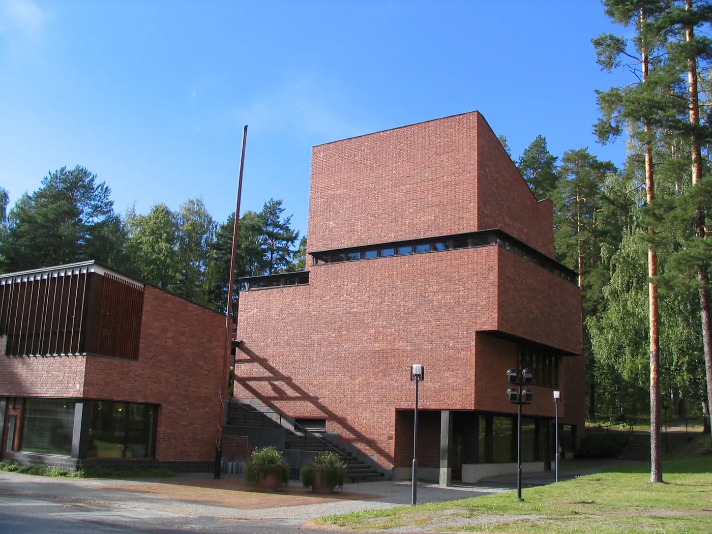
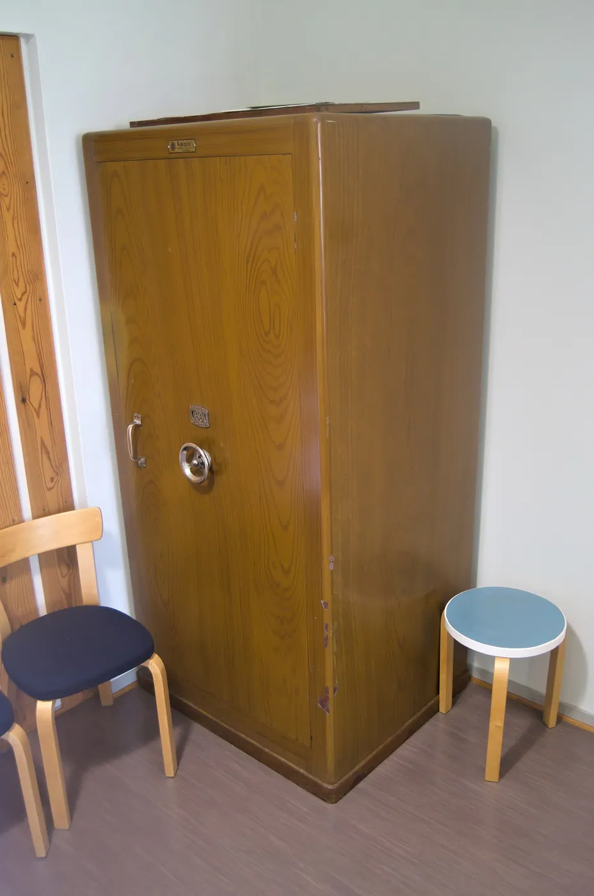
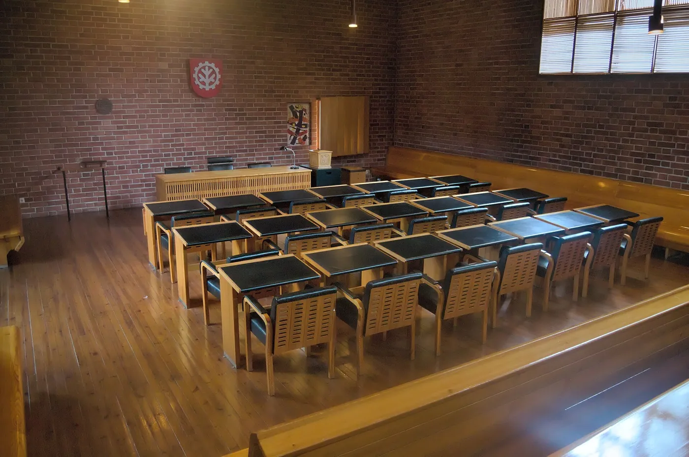
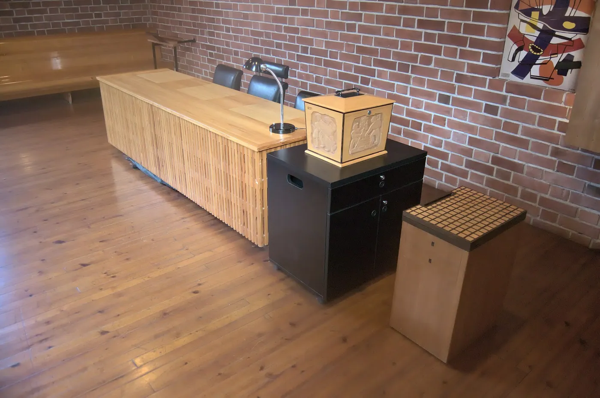

1/8 · Exterior · Säynätsalo town hall, JyväskyläPhoto: Tiia Monto · CC BY-SA 3.0 · source2/8 · Exterior · Säynätsalo town hall grass stairsPhoto: Alexignat · CC BY-SA 4.0 · source

3/8 · Exterior · Säynätsalo town hall and library, Jyväskylä, FinlandPhoto: Zache · CC BY-SA 3.0 · source

4/8 · Exterior · Säynätsalo town hall courtyardPhoto: Alexignat · CC BY-SA 4.0 · source

5/8 · Interior · View from the back of the council chamber of Säynätsalo Town Hall in Jyväskylä, Finland towards its frontPhoto: Antti Leppänen · CC BY 4.0 · source

6/8 · Interior · This is a photo of a monument in Finland identified by the ID 'Aalto Works' (Q127518238)Photo: Mikkoau · CC BY-SA 4.0 · source7/8 · Detail · Rafters in the ceiling of the council chamber of Säynätsalo town hall in Jyväskylä, FinlandPhoto: Antti Leppänen · CC BY 4.0 · source